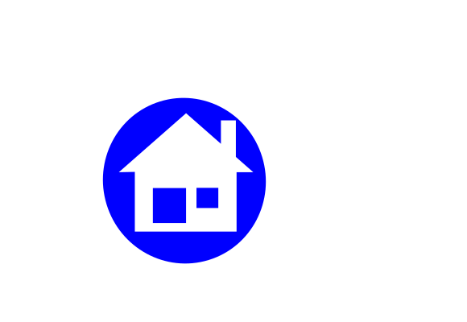

HOW-TO: Программа на Phyton, Часть 1СодержаниеHOW-TO: Программа на Python, Часть 1 |
|
Из множества существующих языков программирования Python — один из самых лёгких в изучении.
Он создан в конце 80-х годов XX века, но с тех пор он сильно изменился. Хотя Python входит в
состав большинства дистрибутивов Linux, на него часто не обращают внимания при выборе языка
для изучения. В этой статье мы рассмотрим создание консольных приложений, а в следующей —
программирование графических интерфейсов (GUI). Давайте создадим простую программу прямо сейчас.
Наберём код в текстовом редакторе (например, в gedit). Потом мы разберёмся, что делает каждая
строка и пойдём дальше.
Введите эти 4 строки:
#!/usr/bin/env python
print 'Hello. I am a python program.'
name = raw_input("What is your name?")
print "Hello there, " + name + "!"
Это всё. Сохраните файл как hello.py в любом месте. Я предлагаю сохранить его в папке
python_examples в домашнем каталоге. Этот пример показывает, как просто написать программу на
Python. Для запуска программы нужно сделать её файл исполняемым. Для этого введите в терминале
chmod +x hello.py
в папке, в которой вы сохранили программу. Теперь запустите её.
greg@earth:~/python_examples$ ./hello.py
Hello. I am a python program.
What is your name? Ferd Burphel
Hello there, Ferd Burphel!
greg@earth:~/python_examples$
Вот и всё.
Теперь давайте рассмотрим пример программирования цикла. Запустите текстовый редактор и
наберите следующую программу:
#!/usr/bin/env python
for cntr in range(0,10):
print cntr
Не забудьте поставить символ табуляции перед строкой «print cntr». Это важно. В Python для
указания на блоки кода используются не круглые «(» и фигурные «{» скобки как в других языках
программирования, а отступы.

|
 |